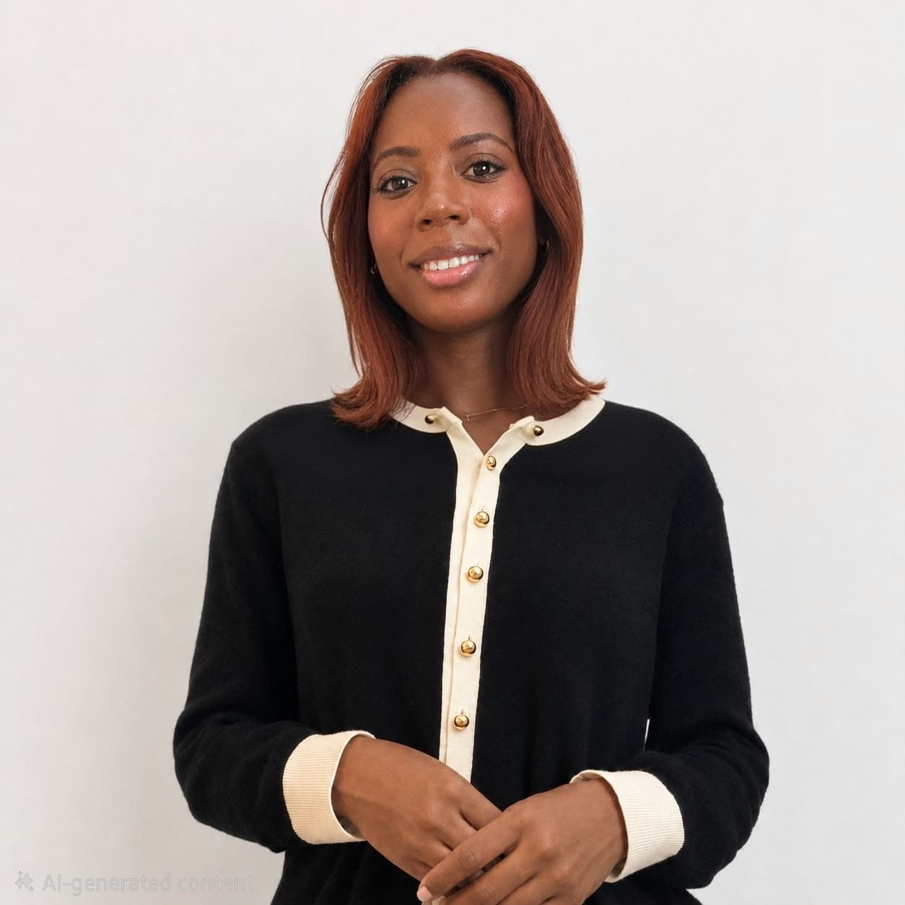

Nombre: Ismailyn Maria Reyes
Edad: 27 años
Estudios: Licenciatura en Informática

Mi nombre es Ismailyn Maria Reyes. Nací y crecí en Santo Domingo, República Dominicana, donde he construido gran parte de las experiencias que han formado quién soy. Actualmente curso la Licenciatura en Informática y me desarrollo profesionalmente como Ingeniera de Calidad de Software (QA), un área que combina mi interés por la tecnología con mi gusto por analizar, investigar y resolver problemas.
La curiosidad es una de las características que más me define. Me gusta entender cómo funcionan las cosas, por lo que disfruto especialmente de la ciencia, las matemáticas y la tecnología. También siento una gran fascinación por otras culturas. Hablo dos idiomas; espanol e ingles, y estoy aprendiendo coreano por interés personal. Me gusta descubrir nuevas formas de ver el mundo y aprender de ellas.
A pesar de tener un lado bastante analítico, la creatividad ocupa un lugar importante en mi vida. Me apasionan el arte y las diferentes formas de expresión; disfruto visitar museos, ir al teatro, pintar, escribir poemas y asistir a conciertos de música clásica. Para mí, ambas facetas —la analítica y la creativa— pueden coexistir y complementarse.
Fuera del trabajo y los estudios, encuentro mucho disfrute en las cosas sencillas: leer, escribir en mi journal, practicar pádel, nadar, hacer pilates, pasar tiempo con mi familia y amigos o simplemente conectar con la naturaleza. También procuro mantenerme cerca de mis raíces dominicanas a través de la música y el baile; después de todo, como buena dominicana, puedo terminar bailando hasta los anuncios.
Una parte muy especial de mi vida son mis tres gatos, Arya, Mishka y Tyrone. En general, me considero una persona que disfruta aprender, crear, explorar intereses nuevos y encontrar un equilibrio entre mi lado analítico y mi lado creativo.
| Hora | Lunes | Martes | Miércoles | Jueves | Viernes | Sábado |
|---|---|---|---|---|---|---|
| 7:00 AM - 8:50 AM | INF5170 — Lab. Lenguaje de Programación III | |||||
| 8:00 AM - 9:50 AM | INF4260 — Redes de Proc. de Datos | |||||
| 8:00 AM - 11:50 AM | INF5160 — Lenguaje de Programación III | |||||
| 5:00 PM - 7:50 PM | INF4250 — Teleproceso | |||||
| 6:00 PM - 8:50 PM | INF5260 — Estructura de Datos | INF4200 — Base de Datos I |